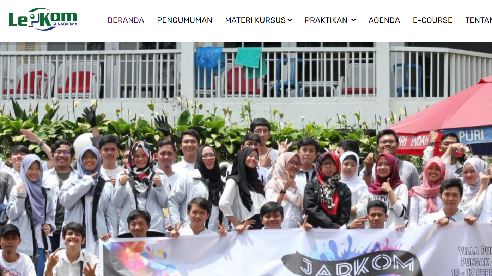
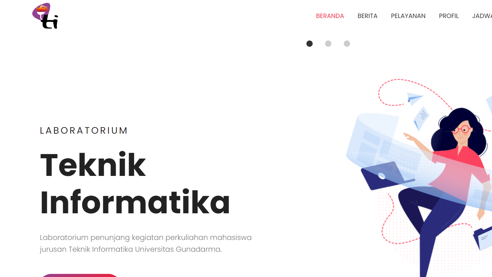
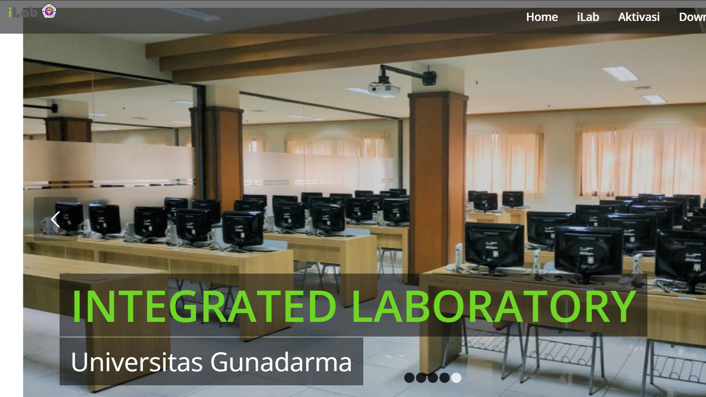

Tinfor Media
TINFOR PRAKTIKUM
Tinfor Event
Tinfor Lapor
Tinfor Market
Tinfor Perpus
Tinfor Praktikum
Tinfor Site
HOME
TINFOR PRAKTIKUM
Selamat datang, sobat Informatika !
TINFOR PRAKTIKUM
wadah peningkatan skill programming & logika algoritma sebagai penunjang perkuliahan mahasiswa/mahasiswi jurusan Teknik Informatika.
TINFOR PRAKTIKUM

UG - LEPKOM
Read more

UG - LABTI
Read more

UG - ILAB
Read more